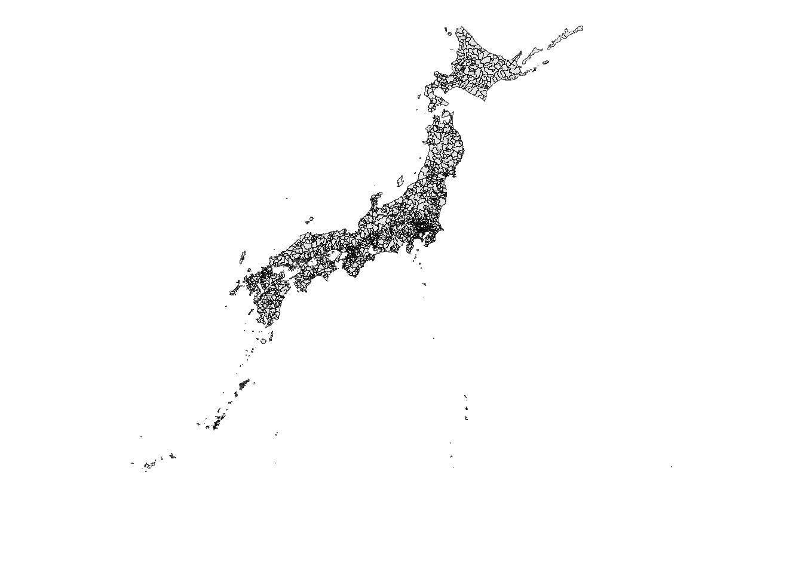

# 未インストールの場合
# pak::pak("terra")
library(terra)はじめに
今回は夜間光について扱います。
夜間光とは、人工衛星から夜間に撮影された地上の光のデータのことを指し、夜間光の強さやパターンは、都市の発展、産業の活況、電力消費量などを反映していると考えられています。
例えば Martínez (2022) では、独裁的な政府ではGDP成長率が過大申告されているという仮説をもとに、夜間光は政府が制御できないという客観性を用いて仮説検証を行っています。結果として独裁国家では、同じ夜間光の伸びに対して報告されるGDP成長率が過大になっていることを明らかにしています。
このように夜間光は近年の研究で度々用いられており、その客観性が有用な指標になっているわけですが、今回はどのようにこの夜間光データを扱えばよいのか、説明していきます。
使用するデータ
夜間光は、NASAのSuomi NPPに搭載されたVisible/Infrared Imager and Radiometer Suite (VIIRS)という地球観測用のセンサーによって観測され、こちらのページからダウンロードできます。
今回使用するのはAnnual VNL V2という年単位のデータで、この中の、雲などのノイズを除去しつつ年間の夜間光の平均を反映したものを使っていきます。
Annual VNL V2のセクションから「Go to Download V2.2」をクリックし、ダウンロードページに飛びます。
任意の年（今回は2024年とします）のフォルダをクリックすると、.gzファイル（gzipファイル）がいくつかあります。目的にもよりますが、今回は平均のデータを使うので、~average.dat.tif.gzというファイルをクリックしたダウンロードします。おそらく1番上に表示されていると思います。
ダウンロードに際してアカウント登録が必要です。ダウンロードしたいファイルをクリックすると登録を求められると思うので表示された内容に従って登録してください。
右にファイルサイズが表示されていますが、10GB近いファイルですので、ダウンロードには30分近く要します。ダウンロードできたら、通常のzipファイル同様に展開してください。
TIFFファイルについて
ダウンロードしたファイルは、.tif形式になっています。これはTIFFファイルと言って、Tagged Image File Formatの略です。TIFFファイルは画像ファイルの一種で、写真や図面、スキャン画像などを高画質・非圧縮または可逆圧縮で保存できる形式です。
特に今回用いるファイルはGeoTIFFと言い、TIFFフォーマットに位置情報（地理情報）を埋め込んだ拡張版です。そのため、シェープファイル等とあわせて特定の場所におけるデータを編集したり分析したりすることができます。
ラスタデータについて
このTIFF形式のデータは、ラスタデータの一種です。ラスタデータとは、格子状のセル（ピクセル）で構成されるもので、各セルに値を持つグリッドデータです。例えばExcelでシート上に地図を書いて、土地に該当するセルにデータを入れていったようなイメージです。ピクセルの大きさによってデータの大きさも異なり、もちろん細かいピクセルにしたデータの方が大きくなります。
ちなみに、これまで扱ってきたシェープファイルやGeoJSON、Geopackageなどの点や線、ポリゴンなどの幾何学的な形で空間情報を表現するデータをベクタデータと言います。こちらは行政区域データのような境界線を表したり、線路などの線、駅などのポイントデータが該当します。
Rで読み込み可視化する
ダウンロードしたファイルを読み込みます。
必要となるパッケージは以下の通りです。
10GBもあるファイルですが、シェープファイル等と違って読み込み自体は素早くできます。terraパッケージのrast()関数で読み込んでいきます（ファイル名はオリジナルから変更しています）。ファイルまでのパスは各々変更してください。
ntl_24 <- rast(here::here("data/nighttime_lights/nighttime_lights_2024.tif"))TIFFファイルをプロットするには、terraパッケージのplot()関数を用います。ここでplot()はベースRの関数としても備わっているため、その関数と区別するためにterra::plot()と明示して使用します。
terra::plot(ntl_24)ご覧の通り、ほぼ紫になってしまっており、このままではどこがどこなのかさっぱり認識できません。これは外れ値ともいえるような極端に明るいところが点在しているため、その他の光量がほぼ0のようになってしまっていることが原因です。
ここで、右の凡例が光量の値を示しているのですが、この値を600などの大きい値ではなく、0から10のような狭い範囲でプロットしてみましょう。range引数で指定することができます。
terra::plot(ntl_24, range = c(0, 10))今度はどうでしょうか。10以上のところは白飛びしていますが、それでもスケール調整によって見やすくなったと思いますし、地図が浮かび上がってきました。こういうことはプロットの際にはよくあるので、うまくスケール調整をしながらプロットしてみてください。
日本を切り出す
今度はこの夜間光のファイルから日本を切り出してみます。
日本を切り出すメリットとしては、プロットの際に日本にフォーカスできることはもちろん、ファイルサイズを大幅に縮小することができます。日本に切り取った場合、10GBから15MB程度までファイルサイズは小さくなります（！）。
まずは切り取るための土台として日本の行政区域データを準備します。
日本の市区町村データを準備
以下のファイルを使用します。国土数値情報ダウンロードサイトからとってきた行政区域データを、各自治体が1オブジェクトになるように整理したデータです。これをmuniとして読み込んでおきます。
library(sf)
muni <- read_sf(here::here("data/jpn_geojson/municipality_summarise.gpkg"))コード
ggplot2::ggplot(muni) +
ggplot2::geom_sf() +
ggplot2::theme_void()
ポイント：夜間光のラスタデータと、行政区域のベクタデータの投影座標系を揃える必要があります。これをあらかじめ設定しておかないと、後々切り取る際の基準がバラバラになってしまい、ずれが生じてしまいます。この行政区域データを、夜間光データと同じ座標系に設定しましょう。
muni <- muni |>
sf::st_transform(terra::crs(ntl_24))わかりやすくパッケージも明示しましたが、ラスタデータの座標系（CRS）はterraパッケージのcrs()関数で取得でき、これをsfパッケージのst_transform()関数で読み込ませて座標系を上書きしています。ベクタデータの場合の座標系は、sf::st_crs()で取得できます1。
切り取り
切り取る際には大きく分けてcrop()関数とmask()関数の2つを使います。
crop()関数はある範囲でラスタデータを切り取り、mask()は指定したポリゴンの形状に基づいてその形で切る関数です。今回のイメージで言えば、日本を囲む四角形で一度切り取ったうえで、日本の形に添ってさらに切り取るという流れです。一度crop()を挟むことでmask()の計算を軽量化することができます。
crop()で四角形に切り取る
切り取るうえで、基準は様々あります。例えば日本の東西南北の端の緯度経度を取得してその通りに切り取るというものであったり、日本がすっぽり埋まるような緯度経度を自分で指定して切り取るといったような方法です。今回は前者を採用して進めてみます。
いま、ntl_24という夜間光のラスタデータと、muniという自治体のベクタデータがあります。ここでmuniがすっぽり収まるような四角形（外接矩形）に切り取るため、terra::ext()を用います。
japan_extent <- ext(muni)これ自体はプロットしても日本は表示されません。外接矩形を切り出しただけで、範囲のみが出てきます。
これを使って、ntl_24を切り取ります。
cropped <- crop(ntl_24, japan_extent)
terra::plot(cropped, range = c(0, 10))先ほどと同様光量の範囲を0～10に絞ってプロットしました。日本がしっかり収まっているのがわかると思います。ぴったり切っているため、北海道の頭が上辺に接していますが、最終的にプロットを載せないのであれば特に問題ないかと思います。
Tip夜間光のプロットまで載せたい場合
成果物にプロットまで載せたい場合は、もう少し北に幅を持たせたいかもしれません。その場合はext()を使う段階で調整をします。
japan_extent <- ext(muni)
# バッファを加える
japan_extent <- ext(
xmin(japan_extent),
xmax(japan_extent),
ymin(japan_extent),
ymax(japan_extent) + 2
)このように、ext()で上書きします。経度の下限上限、緯度の下限上限の順に指定し、その中でプラス（あるいはマイナス）何度余白を持たせるかを設定します2。これでプロットすると以下のようになります。
mask()で日本の形に沿って切り出す
ラスタデータの範囲を絞ることができたので、次は軽量化したこのデータから日本の形を切り出していきます。
以下のコードで切り出せます。
masked <- mask(cropped, vect(muni))
terra::plot(masked, range = c(0, 10))外接矩形のデータと行政区域データを用いて、日本の領土上における夜間光をプロットすることができました。ポイントは、ラスタデータとベクタデータでそろっておらず計算できないため、vect()を用いてmuniをmask()で計算できる形に変更しているところです。
以上で夜間光データから日本を切り出すことができました。
市町村ごとに光量を計算する
ここからは、切り出したデータを用い、市町村の平均光量を計算していきます。なお、本ページでは計算の厳密さは重視しませんので、あくまでも計算方法の提示にとどめます3。
使用するデータは今計算したmaskedです。そして計算に使用する関数はterra::extract()です。
ntl_values <- terra::extract(masked, muni, fun = mean, na.rm = TRUE)extract()関数を使い、maskedとmuniを重ね合わせながら、平均（mean）を計算しています4。欠損値がある場合でも対応できるように、na.rm = TRUEを指定しています。このときもし
Warning: [extract] transforming vector data to the CRS of the rasterというような警告が出てきた場合は座標系が揃っていないということなので、前に戻って座標系を設定してください。
計算したものの中身は以下のようになっています。
| ID | nighttime_lights_2024 |
|---|---|
| 1 | 10.530607 |
| 2 | 2.032149 |
| 3 | 2.897246 |
| 4 | 3.978741 |
| 5 | 6.942668 |
| 6 | 1.047370 |
このIDはmuniの行番号に対応しているので、muniにbind_cols()等すれば適切に結合できます5。
例：
library(tidyverse)
muni_ntl <- muni |>
bind_cols(ntl_values) |>
select(-ID) |>
relocate(geom, .after = last_col())IDはもはや不要なので抜いて、個人的にgeomは最後に置きたいので移動させていますが、これらはなくても問題ありません。
これでできるのが以下です。
| name_muni | id_muni | id_pref | nighttime_lights_2024 | geom |
|---|---|---|---|---|
| 札幌市 | 01100 | 01 | 10.530607 | MULTIPOLYGON (((141.2828 43... |
| 函館市 | 01202 | 01 | 2.032149 | MULTIPOLYGON (((141.1571 41... |
| 小樽市 | 01203 | 01 | 2.897246 | MULTIPOLYGON (((140.8554 43... |
| 旭川市 | 01204 | 01 | 3.978741 | MULTIPOLYGON (((142.2877 43... |
| 室蘭市 | 01205 | 01 | 6.942668 | MULTIPOLYGON (((140.941 42.... |
| 釧路市 | 01206 | 01 | 1.047370 | MULTIPOLYGON (((144.3589 42... |
単純平均ではあるものの、札幌が大きな値をとっており、傾向はあっていそうな感じです。
他の、例えばメッシュデータなどを組み合わせればもう少し詳細に計算もできると思いますが、今回はここまでとします。
参考文献
Martínez, Luis R. 2022. "How Much Should We Trust the Dictator’s GDP Growth Estimates?". Journal of Political Economy 130 (10): 2731–69. https://doi.org/10.1086/720458.